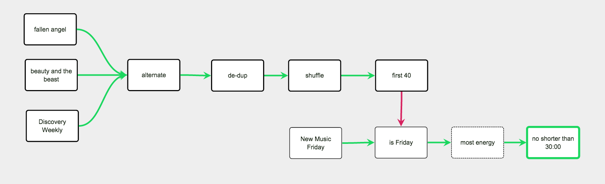

Smarter Playlists
Smarter Playlists lets you automate the process of making complex playlists.
With Smarter Playlists you can create new playlists by combining a wide range of music sources - artists, albums, genres, pre-programmed playlists and filtering and manipulating them with a nifty graph-based UI.
Above is a Smarter Playlist that generates an energetic mix of some of my favorite music, along with Spotify recommendations, unless it is Friday when the focus is on energetic new music.